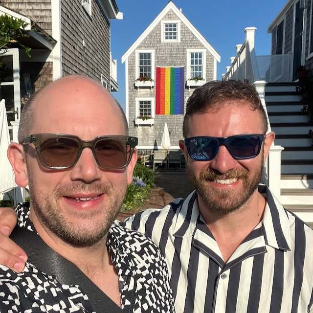

Elliot Milco
Stuff I Care About (Outside Work)
I am a huge fan of the early work of Martin Heidegger, and my master's thesis focused primarily on the work of Michel Foucault. I rarely get the chance to talk about this stuff nowadays, but will happily do so when given the chance.
I am a big fan of poetry. I enjoy memorizing and reciting poetry. I think there's a lot to be gained from ongoing engagement with poetry of all kinds, and I believe that the memorization of carefully chosen words can help each of us express ourselves more clearly and more beautifully.
I'm a gym nut. I devote a lot of my free time to fitness and food.
Oh, and I'm lately I've been trying to pick up German again, though it's hard to find time.
Causes that matter to me
I care about supporting and fostering a free, open, democratic society. I'm a member of the ACLU.
As a kid, I was hugely influenced by my local PBS station. Programming about nature, american history, scientific research, and current events opened up my mind and showed me so much of the world I would never otherwise have known about. I am a supporter of public media and a member of my local PBS station.
As a gay man who struggled with my sexuality due to my ultra-conservative religious upbringing, I care a lot about providing crisis services to at risk LGBTQ+ youth, and am a supporter of the Trevor Project.